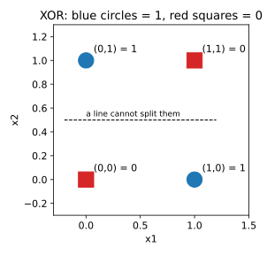
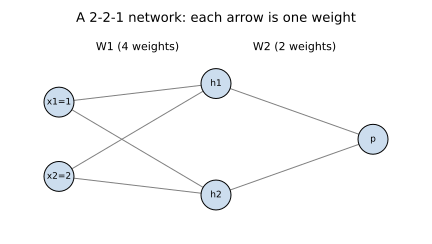
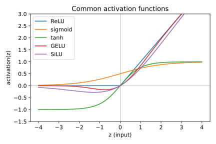

Companies use neural networks to read invoices, spot defects on a factory line, rank search results and power chat assistants. Before you can use or debug any of these, you need to see that a neural network is not magic. You already know linear regression and logistic regression. A neural network is many of these small linear models stacked together, with a bend (a non-linearity, a step that is not a straight line) put between them. By the end of this chapter you will be able to count the parameters of a network, run its forward pass by hand, explain why XOR needs a hidden layer, and choose an activation function for each part of a network. We use real numbers you can check on paper.
Words you need
| Word | Plain meaning |
|---|---|
| Input (x) | A number the model is given (a pixel, a price, a response time) |
| Weight (w) | A number that says how important one input is |
| Bias (b) | A constant added to the sum; it shifts the limit |
| Activation | The final rule applied to the sum |
| Epoch | One full pass over all training examples |
Real-world mapping
| Part | Example value | Where it appears in the job |
|---|---|---|
| Inputs | (age=30, income=5) for a loan | Features in a credit-scoring model |
| Weights | (0.2, 0.7) | The learned numbers saved in a model file |
| Bias | -1.5 | The bias field you see in every layer summary |
| Output | 1 = approve | A class label or a probability |
A perceptron takes inputs x₁, x₂, ..., xₙ. It computes a weighted sum plus a bias, and then applies a rule.
z = w₁·x₁ + w₂·x₂ + ... + wₙ·xₙ + b (the "pre-activation")
output = 1 if z > 0 else 0 (the "step activation")z to produce the output.The perceptron learning rule (Rosenblatt, 1958) is simple. For each training example, compute the prediction p. Let d = target − p. Then update w ← w + d·x and b ← b + d. If the prediction is right, d = 0 and nothing changes.
Problem 1.1.1 Train a perceptron for the AND gate by hand. Inputs (0,0),(0,1),(1,0),(1,1), targets 0,0,0,1. Start with w = (0,0), b = 0. Go through the examples in order, one epoch.
| Step 1 | Example (0,0), target 0. z = 0, not greater than 0, so p = 0. d = 0. No change. |
|---|---|
| Step 2 | Example (0,1), target 0. z = 0, p = 0. No change. |
| Step 3 | Example (1,0), target 0. z = 0, p = 0. No change. |
| Step 4 | Example (1,1), target 1. z = 0, p = 0. d = 1. Update w = (0,0) + 1·(1,1) = (1,1), b = 0 + 1 = 1. |
| Step 5 | The second epoch continues from w = (1,1), b = 1. Now (0,0) gives z = 1 > 0, so p = 1 but the target is 0. The rule corrects it again. Doing this by code is faster. |
| Answer | After several epochs the rule settles on weights that work. The code below shows the final weights. |
| Check | We verify the final weights on all four inputs right after the code output. |
| Why it matters | This is the oldest learning algorithm in AI. Every modern network still "changes weights when it is wrong", only with a smoother rule. |
Before you run it, predict: will XOR reach zero mistakes? (Hint: look at the picture in 1.1.2.)
import numpy as np
X = np.array([[0,0],[0,1],[1,0],[1,1]])
def train(y, epochs=10):
w = np.zeros(2); b = 0.0
for ep in range(epochs):
err = 0
for x, t in zip(X, y):
p = 1 if w @ x + b > 0 else 0
d = t - p
if d:
w = w + d * x; b += d; err += 1
if err == 0:
return w, b, ep
return w, b, None
for name, y in [("AND",[0,0,0,1]), ("OR",[0,1,1,1]), ("XOR",[0,1,1,0])]:
print(name, train(np.array(y)))AND (array([2., 1.]), np.float64(-2.0), 5)
OR (array([1., 1.]), np.float64(0.0), 3)
XOR (array([-1., 0.]), np.float64(1.0), None)Line by line: p = 1 if w @ x + b > 0 else 0 is the perceptron rule. d = t - p is the error: +1 means we said 0 but should say 1, so we push w toward x. if d: skips the update when we are right. err == 0 means a clean pass, so we stop.
The last number is the epoch where there were zero mistakes. AND was solved after epoch 5 (the sixth pass was clean). OR after epoch 3. XOR never reached zero mistakes; None means it kept failing for all 10 epochs.
Check AND with the final weights w = (2,1), b = −2: input (1,1) gives 2+1−2 = 1 > 0, output 1. Input (1,0) gives 2−2 = 0, not greater than 0, output 0. Input (0,1) gives 1−2 = −1, output 0. Correct.
Problem 1.1.2 Why can no single perceptron solve XOR? Use the picture.
| Step 1 | A perceptron decides with w·x + b > 0. In 2D that is a straight line. One side is class 1, the other is class 0. |
|---|---|
| Step 2 | XOR needs (0,1) and (1,0) as class 1, and (0,0) and (1,1) as class 0. |
| Step 3 | Draw the four points at the corners of a square. The two class-1 points sit on one diagonal, the two class-0 points on the other diagonal. |
| Step 4 | No straight line can separate two diagonals. Any line that puts (0,1) and (1,0) on one side must also catch (0,0) or (1,1). |
| Answer | XOR is not linearly separable, so a single perceptron (or any linear model) cannot solve it. This was the famous 1969 criticism of perceptrons (Minsky and Papert). |
| Check | The code above confirms it: XOR printed None (never reached zero mistakes). |
| Why it matters | In plain words: if the pattern you need is "A or B but not both", a straight-line model will always be wrong somewhere. Real data is full of such interactions. |

Read it like this: the horizontal axis is x₁, the vertical axis is x₂. The four corners are the four inputs. The two blue circles are on one diagonal, the two red squares on the other. The dashed line is one try at a straight divider, and it must cut a diagonal.
x₂
1 | 1(0,1) 0(1,1)
|
0 | 0(0,0) 1(1,0)
+------------------------ x₁
0 1
Class 1 = diagonal pair. No single line separates them.A perceptron with a sigmoid instead of a step is exactly logistic regression. Every neuron in every large model today is this same formula: a dot product, a bias, and an activation. When you read a model summary and see "parameters: 7 million", those are mostly weights w and biases b.
b the decision line must pass through the origin. Always keep it unless a method says otherwise.Check yourself
z = w·x + b, what does a larger bias do to the chance of output 1? Answer: it makes it larger; the neuron fires more easily.d = 0.(1,1) and bias 0.An MLP (multi-layer perceptron, also called a fully connected network or dense network) has:
activation(w·x + b)),In matrix form, one layer is h = f(W x + b). If the layer has 4 neurons and the input has 3 numbers, W has shape 4 × 3, b has 4 numbers, and the parameter count is 4·3 + 4 = 16.
Parameters are the numbers the training process learns (all W and b). Hyperparameters are the choices we make before training (layer sizes, learning rate).
Real-world mapping
| Part | Example value | Where it appears in the job |
|---|---|---|
| Hidden layer size | 64 neurons | A setting you choose when building the model |
W shape | 4 × 3 | Shape errors are the number one bug when you code networks |
| Parameter count | 16 | Printed by model.summary(); links to memory and speed |
| Depth | 12 layers | "Deep" in "deep learning" |
Problem 1.2.1 Solve XOR with two hidden neurons using weights chosen by hand. Use the step activation.
| Step 1 | Hidden neuron A should compute OR: w = (1,1), b = −0.5. Hidden neuron B should compute AND: w = (1,1), b = −1.5. |
|---|---|
| Step 2 | XOR is "OR but not AND". So the output neuron uses w = (1, −1), b = −0.5. |
| Step 3 | Test input (1,1): A: 2−0.5 = 1.5 > 0 gives 1. B: 2−1.5 = 0.5 > 0 gives 1. Output: 1·1 + (−1)·1 − 0.5 = −0.5, not greater than 0, so 0. Correct, XOR(1,1) = 0. |
| Step 4 | Test input (0,1): A: 1−0.5 = 0.5 gives 1. B: 1−1.5 = −0.5 gives 0. Output: 1 − 0 − 0.5 = 0.5 > 0, so 1. Correct. |
| Answer | Two hidden neurons are enough. Code check: |
W1 = np.array([[1,1],[1,1]]); b1 = np.array([-0.5,-1.5])
W2 = np.array([1,-1]); b2 = -0.5
step = lambda z: (z > 0).astype(int)
H = step(X @ W1 + b1)
print(H)
print(step(H @ W2 + b2))[[0 0]
[1 0]
[1 0]
[1 1]]
[0 1 1 0]Before you run it, predict: what will H look like for input (1,1)?
The hidden layer printed H is a new representation of the four inputs. In that new space, (0,1) and (1,0) both became (1,0), and the problem turned linearly separable. This is the whole point of hidden layers: they change the coordinates until the problem becomes easy.
[0 1 1 0] match the XOR truth table.Problem 1.2.2 Count parameters of a realistic network: 20 input features (request size, thread count, ...), hidden layers of 64 and 32 neurons, 1 output.
| Formula | layer parameters = inputs × outputs + outputs |
|---|---|
| Plug in | 20·64+64, 64·32+32, 32·1+1 |
| Compute | 1280+64 = 1344, 2048+32 = 2080, 32+1 = 33 |
| Answer | Total 1344 + 2080 + 33 = 3457 parameters. |
| Check | Sum of weights 1280+2048+32 = 3360 plus biases 64+32+1 = 97 gives 3457. |
| Why it matters | Each parameter is one float (4 bytes), so this model is about 14 KB. A model with 7 billion parameters is about 28 GB in float32. Counting parameters tells you memory. |
Problem 1.2.3 Show that stacking linear layers without an activation gives nothing new.
| Step 1 | Layer 1: h = A x, with A of shape 2×3. Layer 2: y = B h, with B of shape 4×2. |
|---|---|
| Step 2 | Then y = B (A x) = (B A) x. The product BA is one 4×3 matrix. |
| Step 3 | Check with random matrices in code. |
rng = np.random.default_rng(0)
A = rng.normal(size=(2,3)); B = rng.normal(size=(4,2)); x = rng.normal(size=3)
print(np.allclose(B @ (A @ x), (B @ A) @ x), (B @ A).shape)True (4, 3)4×3.np.allclose printed True.
This small network (2 inputs, 2 hidden neurons, 1 output) is the one we will push numbers through in Chapter 2. Each circle is a neuron and each arrow is a weight. Data flows left to right.
input (3) hidden (4) output (2)
x1 ──┐ ┌─ h1 ─┐
x2 ──┼─────▶├─ h2 ─┼───────▶ y1
x3 ──┘ ├─ h3 ─┤ y2
└─ h4 ─┘
Every arrow = one weight. Params: 4·3+4 = 16, then 2·4+2 = 10. Total 26.Check yourself
10·5 + 5 = 55.Let z be the pre-activation. Here is each function and why people use it.
| Name | Formula | Range | Why it exists | Weakness |
|---|---|---|---|---|
| Step | 1 if z>0 else 0 | {0,1} | The original; a hard yes/no | Gradient is 0 everywhere, so it cannot be trained |
| Sigmoid | 1/(1+e^(−z)) | (0,1) | Smooth probability; output for binary classes | Saturates (gradient → 0) for large ` |
| tanh | (e^z − e^(−z))/(e^z + e^(−z)) | (−1,1) | Zero-centered sigmoid; used inside LSTMs | Also saturates |
| ReLU | max(0, z) | [0,∞) | Very cheap; gradient is 1 for z>0, so deep nets train | "Dead" neurons when z<0 always |
| GELU | z·Φ(z) (Φ = normal CDF) | ≈(−0.17,∞) | Smooth ReLU; standard in BERT/GPT-style transformers | Slightly costlier |
| SiLU/Swish | z·sigmoid(z) | ≈(−0.28,∞) | Smooth, non-monotone; used in EfficientNet, modern LLM MLPs (SwiGLU) | Slightly costlier |
| Softmax | e^(zᵢ)/Σⱼ e^(zⱼ) | (0,1), sums to 1 | Turns a score vector into class probabilities | Overflows if not stabilized |
The usual GELU is computed with this tanh approximation: 0.5·z·(1 + tanh(√(2/π)·(z + 0.044715·z³))). Libraries have an exact version too; the two are very close.
z = np.array([-3,-1,0,1,3.])
sig = lambda z: 1/(1+np.exp(-z))
relu = lambda z: np.maximum(0,z)
gelu = lambda z: 0.5*z*(1+np.tanh(np.sqrt(2/np.pi)*(z+0.044715*z**3)))
silu = lambda z: z*sig(z)
print("z ",z);print("relu",relu(z));print("sig ",sig(z))
print("tanh",np.tanh(z));print("gelu",gelu(z));print("silu",silu(z))
print("sig'",sig(z)*(1-sig(z)))z [-3. -1. 0. 1. 3.]
relu [0. 0. 0. 1. 3.]
sig [0.0474 0.2689 0.5 0.7311 0.9526]
tanh [-0.9951 -0.7616 0. 0.7616 0.9951]
gelu [-0.0036 -0.1588 0. 0.8412 2.9964]
silu [-0.1423 -0.2689 0. 0.7311 2.8577]
sig' [0.0452 0.1966 0.25 0.1966 0.0452]Real-world mapping
| Activation | Example value | Where it appears in the job |
|---|---|---|
| ReLU | max(0, -3) = 0 | Hidden layers of CNNs and plain MLPs |
| GELU | gelu(1) = 0.8412 | Every layer of BERT/GPT-style transformers |
| Sigmoid | sigmoid(0) = 0.5 | Output of a "fraud or not" model |
| Softmax | (0.659, 0.242, 0.099) | Output of a 3-class classifier |

How to read it: the horizontal axis is the input z, the vertical axis is what the function returns. Sigmoid (flat at both ends) and tanh are S-shaped, so far from zero their curves are flat, meaning slope near zero. ReLU is flat at 0 on the left and a straight 45-degree line on the right. GELU and SiLU look like ReLU with the corner rounded and a tiny dip below zero.
Before you run the next code, predict: which activation will output exactly 0.0 for z = -3?
Problem 1.3.1 The sigmoid slope is σ(z)(1 − σ(z)). Use the table to explain "vanishing gradient". Suppose 10 sigmoid layers are stacked and each passes the best case slope.
| Step 1 | At z = 0 the slope is 0.5 × 0.5 = 0.25. That is the maximum possible slope. |
|---|---|
| Step 2 | By the chain rule (Math PDF, Pillar 2.7), the gradient through 10 layers multiplies 10 slopes: at best 0.25¹⁰. |
| Step 3 | 0.25¹⁰ = 9.5 × 10⁻⁷, about one in a million. |
| Step 4 | At z = 3 each slope is only 0.045, so 0.045¹⁰ ≈ 3.4 × 10⁻¹⁴. |
| Answer | The signal reaching the first layers is almost zero, so those layers barely learn. This is why ReLU (slope 1 for positive z) replaced sigmoid in hidden layers. |
| Check | 0.25**10 in Python is 9.5367e-07, and 0.045**10 is about 3.4e-14. |
| Interpretation | Imagine passing a message down a line of 10 people who each whisper only a quarter as loud. The last person hears nothing. |
Problem 1.3.2 Compute softmax for scores (2.0, 1.0, 0.1), then show why we subtract the maximum.
| Step 1 | Exponentials: e² = 7.3891, e¹ = 2.7183, e^0.1 = 1.1052. Sum = 11.2126. |
|---|---|
| Step 2 | Probabilities: 7.3891/11.2126 = 0.659, 2.7183/11.2126 = 0.2424, 1.1052/11.2126 = 0.0986. They sum to 1. |
| Step 3 | Now try scores (1002, 1001, 1000). e^1002 is larger than a 64-bit float can hold, so it becomes inf, and inf/inf is not a number. |
| Step 4 | Softmax does not change if we subtract the same constant from all scores. Subtract the max (1002), giving (0, −1, −2). |
s = np.array([2.0,1.0,0.1]); e = np.exp(s); print(e, e/e.sum())
s2 = np.array([1002.,1001,1000]); m = np.exp(s2 - s2.max()); print(m/m.sum())
print(np.exp(s2))[7.3891 2.7183 1.1052] [0.659 0.2424 0.0986]
[0.6652 0.2447 0.09 ]
[inf inf inf]0.6652 / 0.2447 = e¹ = 2.718, as the scores differ by 1.(0.6652, 0.2447, 0.09). The raw np.exp printed inf (with an overflow warning). Always use the "subtract max" trick, or use a library function like torch.softmax. ReLU Sigmoid GELU / SiLU
/ ___-- ~ smooth ReLU
/ _-- small dip below 0
____/ --max(0.01z, z) keeps a small slope for negative z to avoid dead neurons.Interviewers ask "why ReLU instead of sigmoid?" and "why softmax needs the max trick". In real code, a very common bug is applying softmax and then a loss that applies softmax again (Chapter 3). Large language models use GELU or SwiGLU (a gated SiLU) in every layer.
Check yourself
inputs × outputs + outputs.| Formula / pattern | Meaning |
|---|---|
z = w·x + b | pre-activation |
h = f(Wx + b) | one dense layer |
params = in × out + out | dense layer size |
softmax(z) = e^(z−max) / Σ e^(z−max) | stable softmax |
σ'(z) = σ(z)(1 − σ(z)) | sigmoid slope, max 0.25 |
1. (easy) How many parameters in an MLP with layers 4 → 8 → 3? Answer: 4·8+8 = 40 and 8·3+3 = 27, total 67.
2. (easy) A neuron has w = (2, −1), b = 0.5, input (1, 3), ReLU. Output? Answer: z = 2 − 3 + 0.5 = −0.5, ReLU gives 0.
3. (easy) Give sigmoid(0). Answer: 0.5.
4. (medium) What is the output of this code? np.maximum(0, np.array([-2, 0.5, 4])) Answer: [0. 0.5 4.].
5. (medium) Softmax of (0, 0, 0, 0). Answer: each is 1/4 = 0.25.
6. (medium) Find the bug: a developer builds a 3-layer network with Linear layers and no activations and complains it cannot learn a circle boundary. Answer: with no activation the network is one linear map, so only a straight line is possible. Add ReLU/GELU between layers.
7. (medium) Softmax scores (3, 1). Probabilities? Answer: e³ = 20.0855, e¹ = 2.7183; sum 22.8038; so 0.8808 and 0.1192.
8. (hard) Show that sigmoid is a rescaled tanh: σ(z) = (1 + tanh(z/2))/2. Check at z = 2. Answer: tanh(1) = 0.7616, so (1+0.7616)/2 = 0.8808, and σ(2) = 1/(1+e⁻²) = 0.8808. They match.
9. (interview) "Why can't we use a step activation in a network trained by gradient descent?" Answer: its derivative is zero everywhere except at 0, where it is undefined. Gradient descent needs a useful slope to know which way to move the weights, so nothing would learn.
10. (interview) "A teammate says a 2-layer ReLU network can fit any function. Is that true?" Answer: roughly yes in theory (universal approximation, on a bounded region, to any accuracy), but it may need a huge number of neurons, and training may fail to find the weights. Depth often gives the same power with far fewer parameters.
11. (scenario) A shop records 20 numeric features per order and you want to predict "late delivery or not". Sketch an MLP and count parameters for 20 → 16 → 1. Answer: hidden layer 20·16+16 = 336, output 16·1+1 = 17; total 353. Use ReLU in hidden and sigmoid at the output for a probability.
You are my patient, practical professor. I am a working professional moving into data roles, and English is my second language, so use simple words. Teach me the topic "perceptron and why XOR needs a hidden layer". Explain step by step with tiny numbers I can verify on paper, draw ASCII pictures, and after each step ask me one question to check my understanding before continuing. If I answer wrongly, explain the gap kindly and ask again.
You are my patient, practical professor. I am a working professional moving into data roles, and English is my second language. Give me 8 graded exercises (easy to hard) on "multi-layer perceptrons: shapes, parameter counting and forward pass by hand" with small real numbers. Do not give the solutions yet. Wait for my answers, then check each one and explain any mistake.
You are my patient, practical professor. I am a working professional moving into data roles and am learning deep learning, and English is not my first language. Quiz me one question at a time on "activation functions: sigmoid, tanh, ReLU, GELU, SiLU, softmax, and why each exists". Start easy, get harder, and after each answer tell me whether I was right and why. Keep score and give me a summary of weak areas at the end.
You are my patient, practical professor. I am a working professional moving into data roles, with English as my second language. Review my work on "forward pass of a small neural network in NumPy". Check shapes, parameter counts, numerical stability of softmax, and style. Be kind but honest, show corrected code, and explain each fix in simple words. My work: [PASTE HERE]
You are my patient, practical professor. I am a working professional moving into data roles and am preparing for AI job interviews, and English is my second language. Run a mock interview on "neural network basics: perceptron, MLP, universal approximation, activation functions, vanishing gradients". Ask one question at a time, wait for my answer, grade it out of 10, give the ideal short answer, and then ask a harder follow-up. Do 8 questions.